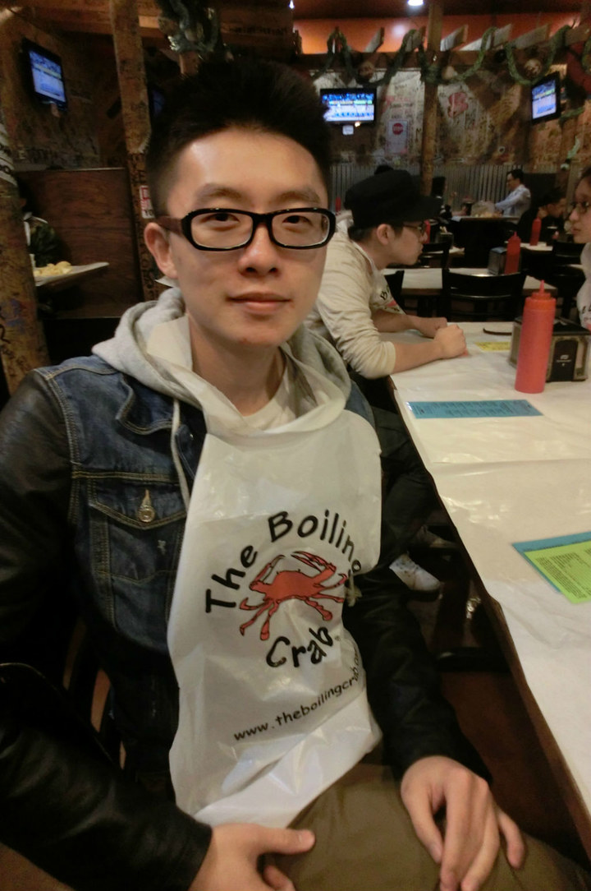

YI SHI Current Address: 303 4th Ave. Apt.305, Coralville, IA, 52241 C: 319-400-3384 yi-shi@uiowa.edu
Education The University of Iowa, Iowa City, IA Anticipated May 2015 B.B.A. Finance B.B.A. Business Analytics and Information Systems GPA: 3.4/4.0
Class project experience Stock Evaluation Spring 2013 Department of Finance, The University of Iowa, Iowa City, IA • Found information associate with targeted company from Yahoo Finance • Utilized Excel for the evaluation of the portfolio • Obtained investment strategy through evaluation • Gave a 20 minutes presentation to present achievement • Gained 12% return on original investment (virtual investment)
Internship Experiences Analyst December 2012 – January 2013 Agricultural Bank of China (ABC), Shenzhen, China • Excel work – Valuing companies or modeling a merger or acquisition or financing • Helped to find reports for senior bankers • Performed industry research and provided report through Word or Power Point
Webmaster June 2011 – August 2011 ThinkTank Learning, Shenzhen, China • Helped to managed the company’s database of customers • Gathered information from potential customers through social network • Performed Web-based marketing and consulting • Reported Web-based feedback to the manager of marketing department
Volunteer Experience Jazz Festival, Iowa City, IA July-2013 • Served drinks in the Beverage Garden during the festival • Made rounds with the trash cart to help collect trash
Art Festival, Iowa City, IA June-2013 • Helped wristband and maintain security in the Beverage Garden • Sold water, and non-alcoholic beverages
Computer Skills Visual Basic, SQL, Word, Excel, Visio, Access, ExtendSim
